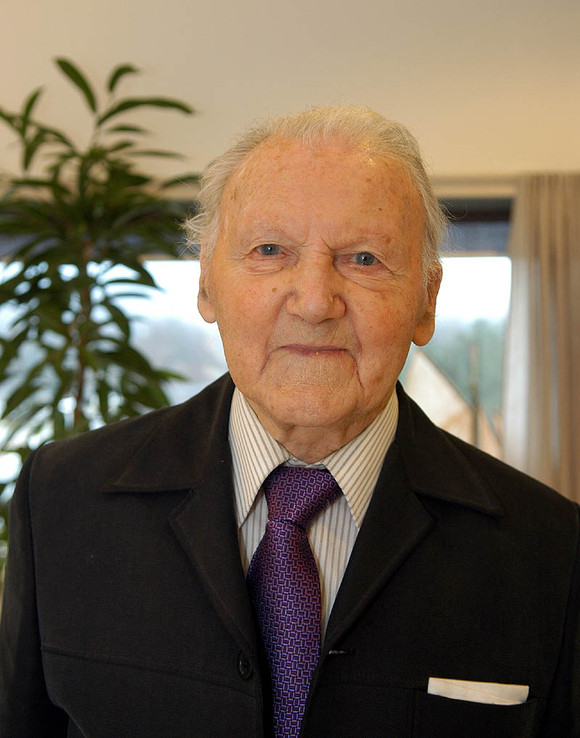

Tekst: Hallgeir Furnes, tidligere skoledirektør i Vest-Agder
Møtet som gav Agder Distrikshøgskole Trettiseks er ikke et vanlig feiringsår. Men likevel hender det jo at tankene finner tilbake til viktige hendelser selv på dette tidstallet. Så også i dette tilfellet, og derfor disse opplysninger knyttet til historien om Høgskolen i Agder, da avgjørelsen om en Distriktshøgskole for Agderfylkene ble tatt.
Det foreligger rikelig dokumentasjon om Universitetskomiteen for Sørlandet sin virksomhet gjennom mange år for å skaffe en høgskole til Agder, de siste årene i samarbeid med Komiteen for Økonomisk College i Kristiansand. Denne komiteen hadde i samarbeid med Handelshøgskolen i Bergen utarbeidet et toåring undervisningsopplegg for økonomisk/administrative fag, meget velpassende også for den kommende Distrikshøgskolen.
Det hele ble samlet og sendt Kirke og undervisningsdepartementet som grunnlag for søknaden om å få en av de nye høgskolene til Agder. Vi hadde hatt mange møter og sammenkomster, men bare dette siste kan kalles historisk, nemlig møtet med Kirke- og undervisningsminister Kjell Bondevik på hans kontor der avgjørelsen falt. Og bakgrunnen for møtet var kampen mellom Rogaland og Agderfylkene om den nye høgskolen.
Vi visste det var gjort godt arbeid i Stavanger for at byen skulle få seg tildelt en av de første nye høgskolene. Og så var nå den avgjørende myndighet, undervisningsministeren fra Rogaland. Dette overbeviste oss om at skulle vi ha noe håp om å komme med i første omgang måtte vi be om samtale med statsråd Kjell Bondevik. Det lyktes jo da, og vi fikk møte statsråden på hans kontor i departement. I dette møtet fikk vi så anledning til raskt å gå igjennom det samlede materialet som på forhånd var sendt departementet.
Vegard Hauge kunne orientere og understreke erfaringsverdien av mange års universitetsundervisning ved Kristiansand Katedralskole. Vi kunne understreke det viktige arbeidet som var gjort av Komiteen for Økonomisk College med aktuelle undervisningsplaner, slik at vi var godt forbredt til å starte. Og fylkene var sterkt innstilt på å skape gode arbeids- og utviklingsforhold for den nye høgskolen. I en sluttappel fant jeg, som medlem i begge komiteene, at både tiden og situasjonen var moden for å utfordre statsråden.
Det skjedde ved å gjøre oppmerksom på at vi i Agder var kjent med at det i Stavanger var gjort et meget godt forarbeids grunnlag for å kunne starte og drive den aktuelle høgskolen, og at de med saklig rimelighet ventet seg tildelt en av disse, styrket av en forventet velvillighet av statsråden fra Rogaland. Også vi i Agder så med velvilje på at Stavanger og Rogaland måtte få sine forventninger oppfylt, og ville med glede i så fall ønske dem lykke til.
Men samtidig minnet jeg statsråden om at det saklige grunnlaget for å få en Distriktshøgskole, med det grunnleggende arbeid som var gjort av de to nevnte komiteene, var like velfundert på alle felter som det Rogaland hadde å by på, så vi saklig sett stod like sterkt i våre forventninger om å få oss tildelt en høgskole som Rogaland må ha lov å mene om sine muligheter.
Hvis det bare gis tilbud til den ene vil det derfor føles som urett av den andre og skape misstemning i det gode skoleforholdet mellom fylkene. Men, føyde jeg til, nå er vi jo i den lykkelige situasjonen at statsråden har i sin makt, og som vi håper, med departemental velvilje, gjerne vil skape høgskoleglede både i Rogaland og i Agderfylkene.
Må det være vår respektfulle, vennlige og håpefulle appell til Kirke og undervisningsminister Kjell Bondevik i det vi takker for at vi fikk denne samtalen. Da jeg hadde avsluttet min appell, vendte Bondevik seg til Vegard Hauge som satt ved hans side, og med lav røst gav han disse gledens ord: Du får det nok som du vil…..
Vi hadde hjulpet statsråden til en rask avgjørelse og Agder var sikret sin Distriktshøgskole.